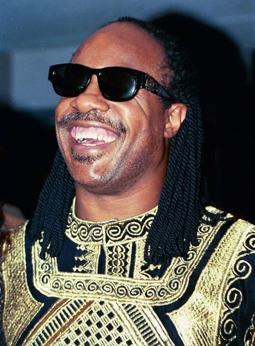
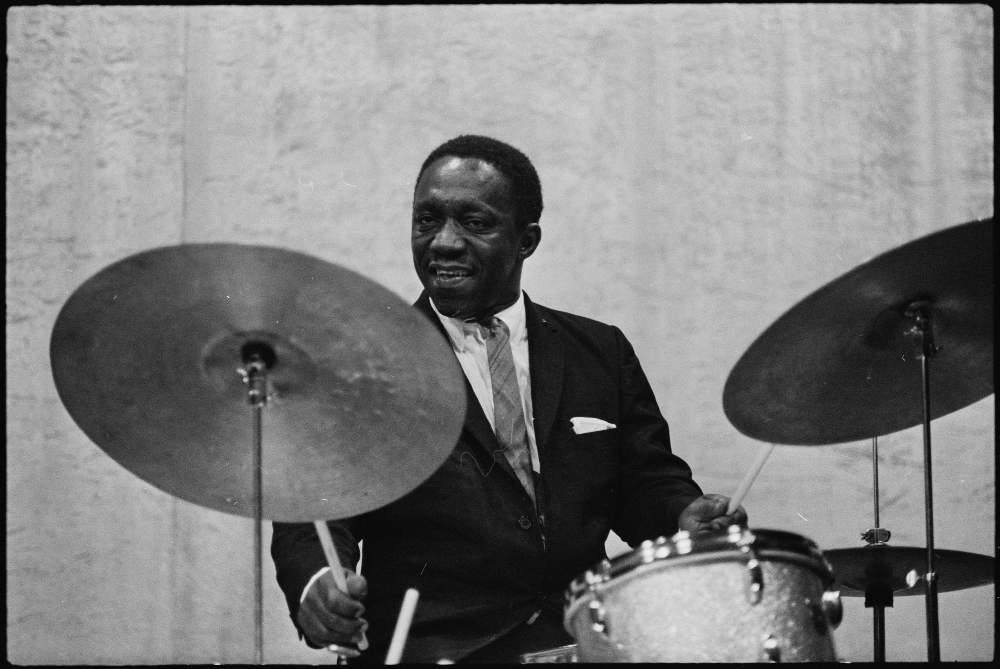

好きなミュージシャン
私のお気に入りのアーティストを紹介します。
Michael Jackson
King of Pop
好きなアルバム
- ▼Off the Wall
- 1. Don't Stop 'Til You Get Enough
- 2. Rock With You
- 3. Workin' Day And Night
- 4. Get On The Floor
- 5. Off The Wall
- 6. Girlfriend
- 7. She's Out Of My Life
- 8. I Can't Help It
- 9. It's The Falling In Love
- 10. Burn This Disco Out
- ▼Thriller
- 1. Wanna Be Startin' Somethin'
- 2. Baby Be Mine
- 3. The Girl Is Mine
- 4. Thriller
- 5. Beat It
- 6. Billie Jean
- 7. Human Nature
- 8. P.Y.T. (Pretty Young Thing)
- 9. The Lady In My Life
- ▼Bad
- 1. Bad
- 2. The Way You Make Me Feel
- 3. Speed Demon
- 4. Liberian Girl
- 5. Just Good Friends
- 6. Another Part Of Me
- 7. Man In The Mirror
- 8. I Just Can't Stop Loving You
- 9. Dirty Diana
- 10. Smooth Criminal
- 11. Leave Me Alone

Stevie Wonder
Soul / R&B
好きなアルバム
- ▼Talking Book
- 1. You Are the Sunshine Of My Life
- 2. MayBe Your Baby
- 3. You And I
- 4. Tuesday Heartbreak
- 5. You've Got It Bad Girl
- 6. Superstition
- 7. Big Brother
- 8. Blame It On The Sun
- 9. Lookin' For Another Pure Love
- 10. I Believe (When I Fall In Love It Will Be Forever)
- ▼Innervisions
- 1. Too High
- 2. Visions
- 3. Living For The City
- 4. Golden Lady
- 5. Higher Ground
- 6. Jesus Children Of America
- 7. All In Love Is Fair
- 8. Don't You Worry 'Bout A Thing
- 9. He's Misstra Know It All
- ▼Songs in the Key of Life
- 1. Love's In Need Of Love Today
- 2. Have A Talk With God
- 3. Village Ghetto Land
- 4. Contusion
- 5. Sir Duke
- 6. I Wish
- 7. Knocks Me Off My Feet
- 8. Pastime Paradise
- 9. Summer Soft
- 10. Ordinary Pain
- 11. Saturn
- 12. Ebony Eyes
- 13. Isn't She Lovely
- 14. Joy Inside My Tears
- 15. Black Man
- 16. Ngiculela - Es Una Historia - I Am Singing
- 17. If It's Magic
- 18. As
- 19. Another Star
- 20. All Day Sucker
- 21. Easy Goin' Evening (My Mama's Call)

Art Blakey
Jazz
好きなアルバム
- ▼Moanin'
- 1. Moanin'
- 2. Are You Real
- 3. Along Came Betty
- 4. The Drum Thunder (Miniature) Suite
- 5. Blues March
- 6. Come Rain or Come Shine
- ▼A Night in Tunisia
- 1. A Night in Tunisia
- 2. Sincerely Diana
- 3. So Tired
- 4. Yama
- 5. Kozo's Waltz
- ▼A Night At Birdland With The Art Blakey Quintet Vol. 1
- 1. Introduction By Pee Wee Marquette
- 2. Split Kick
- 3. Once In A While
- 4. Quicksilver
- 5. A Night In Tunisia
- 6. Mayreh
これは静的なWebページのサンプルです。
⬆ Top